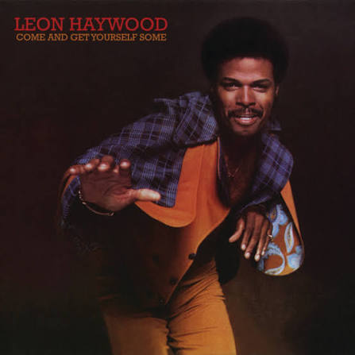
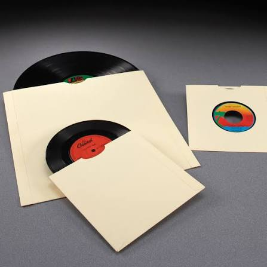

<!DOCTYPE html>
<html lang="en">

<head>
    <meta charset="UTF-8">
    <meta name="viewport" content="width=device-width, initial-scale=1.0">
    <title>Vinyl - A00349720</title>
    <link rel="stylesheet" href="https://www.w3schools.com/w3css/4/w3.css">
    <link rel="stylesheet" href="css/style.css">
    <link rel="icon" type="image/png" href="images/flaticon.png">
</head>

</html>

<body>
    <header class="w3-container w3-padding-16 w3-display-container">
        <h1>Vinyl - Eoin Coughlan</h1>
        <p>Vinyl records and my Hip-Hop collection.</p>
        
    </header>
    <nav class="w3-bar nav-bar">
        <a href="index.html" class="w3-bar-item w3-button w3-mobile current">Home</a>
        <a href="history.html" class="w3-bar-item w3-button w3-mobile">History</a>
        <a href="records.html" class="w3-bar-item w3-button w3-mobile">My Favorites</a>
        <a href="gear.html" class="w3-bar-item w3-button w3-mobile">Gear</a>
        <a href="contact.html" class="w3-bar-item w3-button w3-mobile">Start up</a>
    </nav>
    <main>
        <section class="hero w3-container w3-padding-64">
            <h2 class="w3-xxlarge">"I love vinyl, you know? To me it has depth, warmth, it’s the best way to really
                sample."</h2>
            <figure class="rza-fig">
                
                <figcaption>RZA from Wu-Tang Clan</figcaption>
            </figure>
            <p class="w3-xlarge">RZA - Wu-Tang Clan</p>
            <p class="w3-xlarge">Why I collect records, and why hip hop sounds best on vinyl.</p>
            <a href="records.html" class="w3-button w3-black w3-large">See my Favourite Records</a>
        </section>
        <hr class="sectionindex">
        <section class="cols w3-row-padding w3-padding-32">
            <article class="w3-third">
                <a href="https://open.spotify.com/search/I%20Wanna%20Do%20Something%20Freaky%20to%20You%20Leon%20Haywood"
                    target="_blank" class="sample-link"></a>
                <h3>The music</h3>
                <p>Hip hop was built from old records. Producers looped drum breaks and bass lines from funk and soul
                    LPs. For example, this song is sampled by <a
                        href="https://open.spotify.com/search/Nuthin%20but%20a%20G%20Thang%20Dr.%20Dre" target="_blank"
                        class="song-link">Dr. Dre in "Nuthin' but a 'G' Thang"</a>.</p>
            </article>
            <article class="w3-third">
                
                <h3>The format</h3>
                <p>A record has a cover sleeve, content on the inside and two sides to spin. You pick an album and play
                    it start to finish. It requires patience and attention to detail. It is for true enthusiasts only.
                </p>
            </article>
            <article class="w3-third">
                
                <h3>The experience</h3>
                <p>From Digging through old records to hearing the crackle and warmth of vinyl. It simply can't be
                    matched by any digital format, or physical!</p>
            </article>
        </section>
    </main>
    <footer class="w3-container w3-padding-16 w3-center">
        <p>Eoin Coughlan - A00349720 - A00349720@students.tus.ie</p>
    </footer>
</body>

</html>